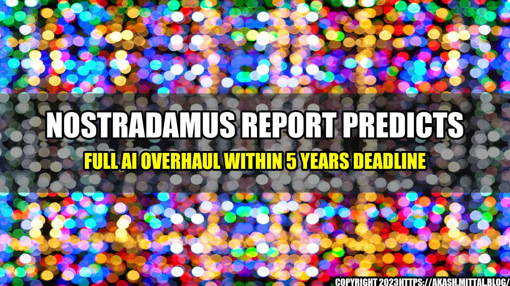

Nostradamus Report Predicts Full AI Overhaul Within 5 Years Deadline
Have you ever wondered what the future holds for artificial intelligence? A recent report from Nostradamus has predicted a rapid advancement in AI within the next five years that will change the way we interact with technology and the world around us.
Nostradamus, a renowned prophet and seer of the 16th century, has been known for his accurate predictions and prophecies. His latest report, released last week, predicts a full AI overhaul within five years deadline, which will drastically change the way we live, work and communicate with each other.
The report predicts that AI will become more intelligent and will be able to perform complex tasks that were once thought impossible for machines. Robots and AI will begin to replace human workers in many industries, and will become an integral part of our daily lives. We will see an increase in AI-powered virtual assistants, self-driving cars and drones, and other innovative technologies that will make our lives easier and more efficient.
The report predicts that the global AI market will reach $190.61 billion by 2025, up from $21.46 billion in 2018. In addition, the number of connected devices will increase from 26 billion in 2019 to 75 billion by 2025, creating new opportunities for AI and IoT technologies.
While the predictions may seem daunting, they also offer a glimpse of a future that is filled with possibilities and opportunities. AI will help us solve some of the world's biggest problems, such as climate change, healthcare, and agriculture. By automating repetitive tasks, AI will enable us to spend more time on creative and meaningful work that enhances our lives and the world around us.
"The future is not set in stone, but it is up to us to embrace the potential of AI and use it for the greater good."
- Nostradamus
Conclusion
The Nostradamus report predicts that AI will transform the world as we know it within the next five years. The advancements in technology will allow machines to perform complex tasks that were once thought impossible for them. While this presents some challenges, it also offers many opportunities for growth and innovation.
As we step into this exciting new future, let us remember that the true potential of AI lies in its ability to make the world a better place. With careful planning and consideration, we can shape the development of AI to address some of the biggest issues facing humanity today.
Practical Tips
- Stay updated on the latest advancements in AI and their implications.
- Collaborate with AI experts to find innovative solutions to problems.
- Balance the use of AI with human decision-making to ensure responsible and ethical use.
Curated by Team Akash.Mittal.Blog
Share on Twitter Share on LinkedIn